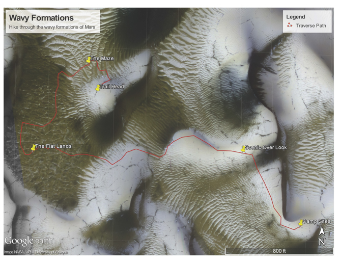

Hikes that are out of this world!

Wavy Formations Hike Information
- Hike Rating: Moderate
- Distance: 0.77 miles
- Elevation Gain/Loss: 103ft/-181ft
- Average Slope: 6.0%/-7.5%
- Max Slope: 16.2%/-17.4%
- Amenities: Campsite
Wavy Formations Hike
The Wavy Formations hike isn't long, but you need to properly prepare your gear. There are fewer waystations or settlements around. The geological formations are spectacular. Start at the trailhead and weave your way through the maze. Enjoy a rest in the flatlands before your ascent to the scenic overlook. Then make your way to the campsites.